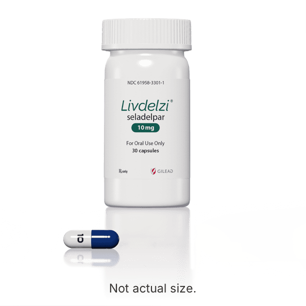

About Amanda
Amanda lives in Florida with her husband and loves to fish and kayak—the water is her happy place.


Once-daily
capsule

Can be taken with
or without food
Can be taken any
time of day

It’s important to take LIVDELZI every day as directed by your healthcare provider. One way to help you remember is to connect taking LIVDELZI to other habits and resources you already rely on, such as:

Talk to your healthcare provider about how to take once-daily LIVDELZI with other medications you already take.

Do you drink coffee every morning? Or brush your teeth before bed every night? Add taking LIVDELZI to one of your already established daily routines to help make it a habit.
Set a reminder on your phone to take LIVDELZI each day, or download a medication tracking app to get reminders and track your progress.

Ask your family or friends to help remind you to take your medication until it becomes a habit.
“LIVDELZI is just one pill once a day. I take it in the morning along with my other medications.”
Amanda
Real LIVDELZI patient

Amanda lives in Florida with her husband and loves to fish and kayak—the water is her happy place.
After Amanda had general surgery, she expected the pain in her abdomen to go away as she healed. When the pain didn’t go away, she went back in for more tests and discovered she had PBC.
After a year of taking ursodiol, Amanda’s lab numbers went down for a bit but they started to rise again. Her liver specialist suggested adding LIVDELZI and now her numbers are the lowest they’ve been since she was first diagnosed. Amanda feels “incredibly blessed” to be able to share her story and show others that they are not the only ones living with PBC.
It’s important to take LIVDELZI as prescribed by your healthcare provider. If you miss a dose, call your healthcare provider immediately. Missing a dose lowers the amount of medicine in your body.
No, unless otherwise directed by your healthcare provider. However, taking your medications, including LIVDELZI, at the same time every day can help you establish a routine and make it more likely that you’ll remember to take them.
It’s important to take LIVDELZI as prescribed by your healthcare provider. If you miss a dose, call your healthcare provider immediately. Missing a dose lowers the amount of medicine in your body.
APPROVED USE AND IMPORTANT SAFETY INFORMATION
LIVDELZI is a prescription medicine used to treat primary biliary cholangitis (PBC) in combination with ursodeoxycholic acid (UDCA) in adults who have not responded well to UDCA, or used alone in patients unable to tolerate UDCA.
LIVDELZI is not recommended for use in people who have advanced liver disease (decompensated cirrhosis). Symptoms of advanced liver disease may include confusion; having fluid in the stomach area (abdomen); black, tarry, or bloody stools; coughing up or vomiting blood; or having vomit that looks like “coffee grounds”.
It is not known if taking LIVDELZI will improve your chance of survival or prevent liver decompensation.
It is not known if LIVDELZI is safe and effective in children.
Important Safety Information
LIVDELZI can cause serious side effects, including:
Tell your healthcare provider right away if you have any of the following signs or symptoms of worsening liver problems during treatment with LIVDELZI:
The most common side effects of LIVDELZI include headache, stomach (abdominal) pain, nausea, abdominal swelling (distension), and dizziness.
Tell your healthcare provider if you have any side effect that bothers you or does not go away. These are not all the possible side effects of LIVDELZI.
Tell your healthcare provider about all of your medical conditions, including if you:
Tell your healthcare provider about all the medicines you take, including prescription and over-the-counter medicines, vitamins, and herbal supplements. Certain other medicines may affect the way LIVDELZI works.
You are encouraged to report negative side effects of prescription drugs to the FDA. Visit www.fda.gov/medwatch, or call
1-800-FDA-1088.
Please see Important Facts about LIVDELZI.